ワットロンクン/チェンライ
WatRongKhun/ ChaingRai
ウドンターニー最後の夜、電気グルーヴのシャングリラのPVの石野卓球が俺、という素晴らしい夢を見た。
起きてから気付く。コレ初夢じゃん！
…今年一年素晴らしい年になる事はほぼ間違いなし！だろう。
と思いテレビを付けたら出演者が全員喪服。何かあったか？！
とりあえず移動のため空港に向かった。
イサーンから北タイへの移動といえば泣きたくなるような長距離バスに乗るかバンコクを経由して飛行機を乗り継ぐか、といった感じなのだが（実際タイの国内線はほとんどバンコクが基点になっている）、今回なんとウドン～チェンマイというフライトがあることを知った。こんな都合のいいフライトがあっていいのだろうか。もしかしたらタイ航空界の影のフィクサーが私のためにわざわざ用意してくれたのではなかろうか、とも思えるほどタイムリーなニッチ路線。
で、乗り込んだのがこの飛行機。
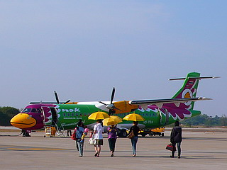
キャリア名；NOKエアー。
ふざけているのは機体だけではない。
いわゆる激安キャリアで、あらゆる点でコストダウンが徹底されている。
ここはあくまでも寺のサイトなので細かい事はいちいち述べないが、例えば大手キャリアのタイ航空と比べると共通しているのは「席に座って空を飛ぶ」くらいのもんじゃあないか、とも思えるほど。それはそれで安かったし面白かったからいいんですけど。
機内誌のヨガ特集。わずか１時間ほどのフライトなのに物凄く深い世界に連れてかれちゃったような気がします。
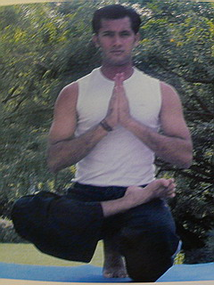 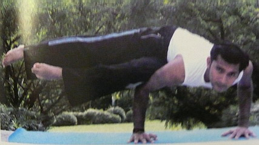
で、幾つかの山を越え、北タイに入った。
いよいよ今回の珍寺修行の最終ステージである。
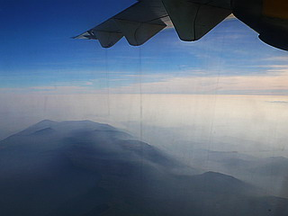 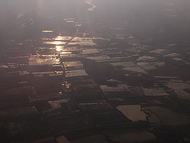
で、チェンマイ到着。
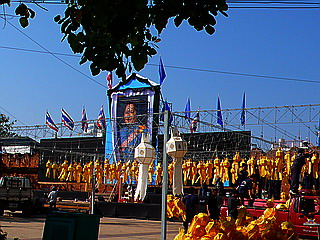
到着後知ったのだが、この日プミポン国王の姉君のカラヤニ王女が亡くなったのだという。
旧市街のターペー門には遺影が掲げられ沢山の提灯が掲げられていた。
当然といえば当然だが国全体が沈痛なムード一色。年末までの国王在位６０周年とか祝！国王様退院！みたいなあげあげムードは吹き飛んでいた。もちろん私の初夢フィバーも若干萎み気味。
あらためてご冥福をお祈りします。
さて。
前置きが長くなってしまってスミマセン。
お寺の話でもしましょうか。
チェンマイの北にあるチェンライの郊外にこんなイカした寺があるのだ。
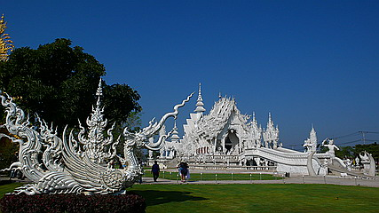
その名はワットロンクン。
ご覧の通り白い。何から何まで真っ白である。
別に未完成な訳でも塗装代をケチっているわけでもない。
白い寺なのだ。
赤×金の掛け合わせが大前提、なタイの仏教寺院において白だけしか使わないお寺、というだけで前代未聞。
お坊さんも思わずカメラを取り出すほど珍しい寺だ。
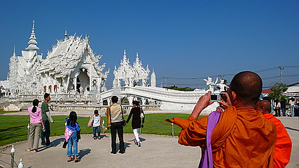
この寺の設計監督はチャルームチャイ・コーシットピパットなる人物。
私は知らなかったが、タイでは有名な画家だそうな。
その作品は境内のアートギャラリーで見られるが、まあ、ありていに言えばラッセンみたいな感じの仏画を描いている。
絵のほうはヌルい色彩とロマンチック過ぎる画面で構成されており、正直、あまり好きになれなかった。
むしろ仏画に関しては一般的なタイのお寺にある壁画の方が原色ビンビン、輪郭クッキリ、モチーフグログロで、あたしゃ好きです。
ただ、どういうわけか寺院の装飾や境内のあちこちに配置されているオブジェのデザインになると俄然冴えまくり。
個人的にはこの方、進むべき道を誤ったんじゃないか、と思えるほど。いや、画家として成功しているようなので誤ってはいないのか…
こんな感じの作風である。
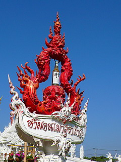 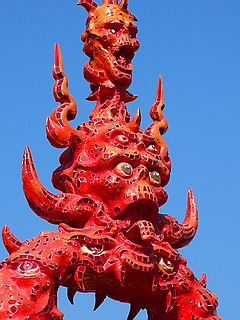
色が単色だからといってシンプルなのかといえばそんなことはない。
軒先や棟飾りは通常のタイのお寺よりも激しい盛り上がりを見せている。
手前の噴水と相まって、まるで白い炎が立ち上がっているかのようだ。
ガラスタイルが埋め込まれているので時々キラキラ光り、巨大な工芸品のようでもある。
色を押さえても地味に思えないのはひとえにこの装飾過多なデザインの賜物であろう。
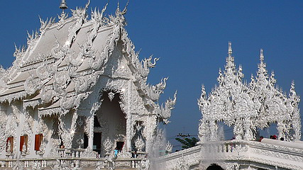
そんなワットロンクンの最大の見所、それはウボソへの道だ。
ご覧の通りである。
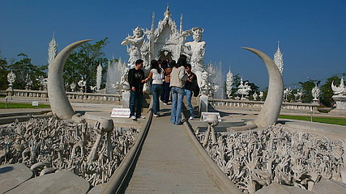
手！手！手！
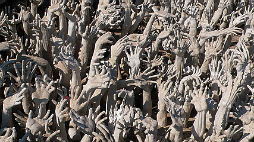
手！手！手！
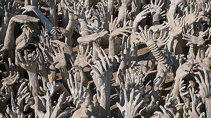
…これは地獄を意味しているのだろうか。
何でお寺にお参りするのにこんな恐ろしいところを通らなきゃいけないんだ！
こうして手だけを並べる、という見せ方はコンクリ地獄にあるような恐ろしげな人体解体ショーよりもある種インパクトは大きいと思う。
何かを必死に掴み取ろうとしている手、絶望の淵にあって一体何を掴もうというのだろう。
あ、良く見ると人間のものとは思えない手も混ざってますね。
お坊さんも地獄の橋を渡って行きます。
小さな子供はトラウマにならないか心配である。
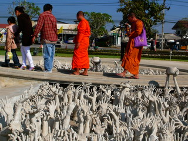 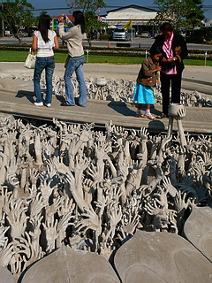
と思ったら子供が賽銭をあげていた。エライ！
こんなウケ狙いみたいな寺でもきっちりタンブン。
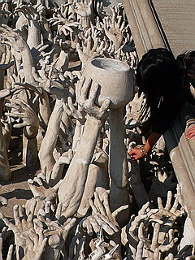 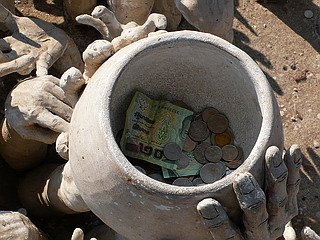
手の群れの中には顔も若干埋まってました。こわ～。
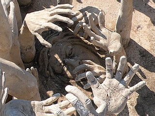 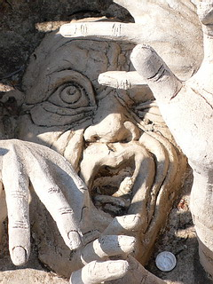
てなわけでウボソへ。
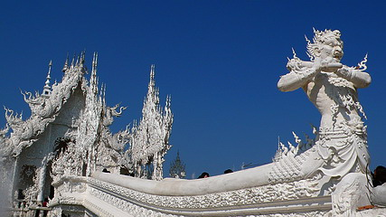
仁王像ともいえないファンキーな門番や妖怪の間を通って本堂へ。
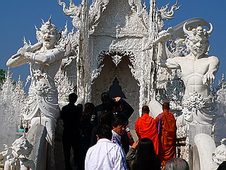 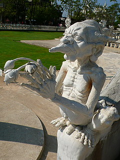
こうしてみるとクリームたっぷりのケーキのようだ。
で、いよいよウボソに到着。
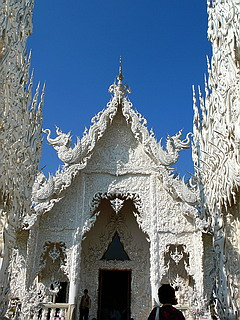
中は意外とシンプルで正面にチャルームチャイ氏作による仏画があり、その前に仏像が鎮座している。
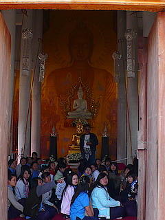
堂内は撮影禁止だったので外から撮りました。
学生さんの団体が押し寄せて説明を聞いていた。
皆さんこちらを向いている。
中に入り振り返って納得。
壁一面を使って魑魅魍魎が跋扈する毒々しい絵が渦巻いていたのだ。
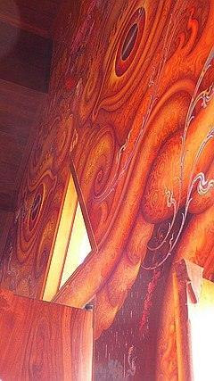
幻想的な作風のチャルームチャイ作品の中にあってひときわ異彩を放つ壁画といえよう。
学生さんと一緒に座って説明を聞く。
タイ語なので分からないが、皆さん結構ゲラゲラ笑いながら話を聞いている。
百鬼夜行のような絵の中には様々な現代のモチーフがちりばめられている。
ウルトラマン（タロウ？）
マトリックスのネオ
ミサイル
戦闘機
ロケット
携帯電話
コンバースのスニーカー
腕時計
ガソリンの給油ノズル
ＶＸガス
などなど。
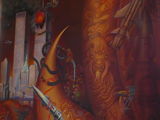 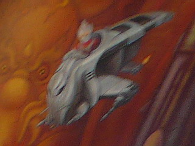
まるでテレビの中の出来事のように空想と現実がごちゃごちゃになった世界観。
世界中で共通している現代社会の精神的風景を描き切った大作である。
ウボソの裏には池があり、先程とはうって変わってシンプル過ぎる塔が建っていた。
この寺は最近出来たので、もしかしたらまだ未完成なのかもしれない。
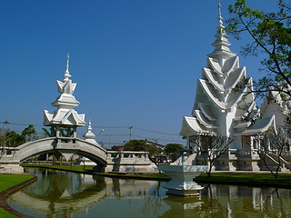
で、白一色の境内においてひときわ目立つ金色の建物。
何か特別の意味合いがある建物に違いない！
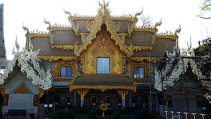
…と思ったらトイレでした…
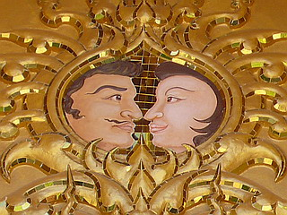
男のもみ上げや髭と屋根のファイヤーパターンが微妙にシンクロ。
このお寺、話題のニュースポットだけに客が沢山来ていた。
チャルームチャイ氏の作品から様々なワットロイクングッズまで土産も充実の品揃え。
この売り上げが寺の運営資金になるのだろう。
次の寺へＧＯ！
泰国珍寺修行 北へ
珍寺大道場 HOME